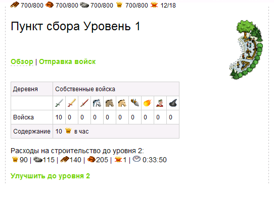
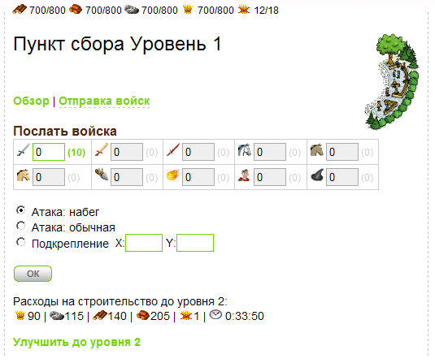
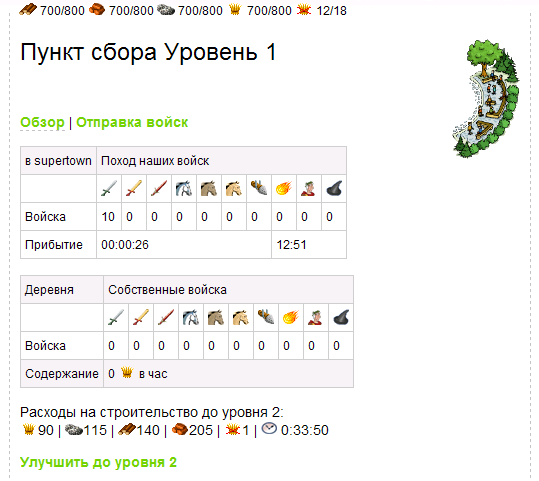
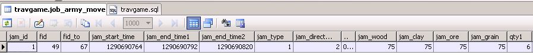

| |
Военные действия
9.1.
Таблица передвижения войск
Приветствуем Вас, уважаемый коллега.
Сегодняшнее наше с Вами занятие мы посвятим военным действиям. Похоже
соседние поселки рано поверили в свою безопасность! Пора напомнить
им, что наша армия самая непобедимая и нанести им визит. И первым
делом, давайте расширим нашу справочную таблицу типов войск
spr_army до десяти.
Вот все типы войск, которые доступны в нашей игре:
/*для казармы*/
insert into spr_army(sa_id,sa_name,sa_image,sa_attack,sa_inf_defence,sa_cav_defence,sa_wood,sa_clay,sa_ore,sa_grain,sa_speed,sa_capacity,sa_cons,
sa_training_time,bt_id,sa_description,sa_type)
values (1,'Легионер','img/army/1.gif',40,35,50,120,100,150,30,6,50,1,'0:00:20',5,'Легионеры — простая и универсальная пехота римлян. ',1);
insert into spr_army(sa_id,sa_name,sa_image,sa_attack,sa_inf_defence,sa_cav_defence,sa_wood,sa_clay,sa_ore,sa_grain,sa_speed,sa_capacity,sa_cons,
sa_training_time,bt_id,sa_description,sa_type)
values (2,'Преторианец','img/army/2.gif',30,65,35,100,130,160,70,5,20,1,'0:29:20',5,'Преторианцы проходят продолжительное обучение ....',1);
insert into spr_army(sa_id,sa_name,sa_image,sa_attack,sa_inf_defence,sa_cav_defence,sa_wood,sa_clay,sa_ore,sa_grain,sa_speed,sa_capacity,sa_cons,
sa_training_time,bt_id,sa_description,sa_type)
values (3,'Империанец','img/army/3.gif',70,40,25,150,160,210,80,7,50,1,'0:32:00',5,'Империанцы — единица атакующих войск Рима. ',1);
/*для конюшни*/
insert into spr_army(sa_id,sa_name,sa_image,sa_attack,sa_inf_defence,sa_cav_defence,sa_wood,sa_clay,sa_ore,sa_grain,sa_speed,sa_capacity,sa_cons,
sa_training_time,bt_id,sa_description,sa_type)
values (4,'Конный разведчик','img/army/4.gif',0,20,10,20,140,160,40,7,0,2,'0:22:40',6,'Конные разведчики — разведывательная единица Рима.',2);
insert into spr_army(sa_id,sa_name,sa_image,sa_attack,sa_inf_defence,sa_cav_defence,sa_wood,sa_clay,sa_ore,sa_grain,sa_speed,sa_capacity,sa_cons,
sa_training_time,bt_id,sa_description,sa_type)
values (5,'Конница императора','img/army/5.gif',120,65,50,550,440,320,100,14,100,3,'0:44:00',6,'Это стандартная кавалерия римлян...',2);
insert into spr_army(sa_id,sa_name,sa_image,sa_attack,sa_inf_defence,sa_cav_defence,sa_wood,sa_clay,sa_ore,sa_grain,sa_speed,sa_capacity,sa_cons,
sa_training_time,bt_id,sa_description,sa_type)
values (6,'Конница Цезаря','img/army/6.gif',180,80,105,800,550,640,180,10,70,4,'0:58:40',6,'Конница Цезаря — это элитные войска римлян. ',2);
/**/
insert into spr_army(sa_id,sa_name,sa_image,sa_attack,sa_inf_defence,sa_cav_defence,sa_wood,sa_clay,sa_ore,sa_grain,sa_speed,sa_capacity,sa_cons,
sa_training_time,bt_id,sa_description,sa_type)
values (7,'Таран','img/army/7.gif',60,30,75,900,360,500,70,4,0,3,'1:16:40',0,'Тараны являются тяжелым орудием поддержки пехоты и кавалерии.',0);
insert into spr_army(sa_id,sa_name,sa_image,sa_attack,sa_inf_defence,sa_cav_defence,sa_wood,sa_clay,sa_ore,sa_grain,sa_speed,sa_capacity,sa_cons,
sa_training_time,bt_id,sa_description,sa_type)
values (8,'Огненная катапульта','img/army/8.gif',75,60,75,900,360,500,70,4,0,3,'1:16:40',0,'Ккатапульты—замечательные орудия дальнего боя.',0);
insert into spr_army(sa_id,sa_name,sa_image,sa_attack,sa_inf_defence,sa_cav_defence,sa_wood,sa_clay,sa_ore,sa_grain,sa_speed,sa_capacity,sa_cons,
sa_training_time,bt_id,sa_description,sa_type)
values (9,'Сенатор','img/army/9.gif',50,40,30,30750,27200,45000,37500,4,0,5,'25:11:40',0,'Сенатор — это выбранный предводитель народа. ',0);
insert into spr_army(sa_id,sa_name,sa_image,sa_attack,sa_inf_defence,sa_cav_defence,sa_wood,sa_clay,sa_ore,sa_grain,sa_speed,sa_capacity,sa_cons,
sa_training_time,bt_id,sa_description,sa_type)
values (10,'Поселенец','img/army/10.gif',0,80,80,5800,5300,7200,5500,5,3000,1,'7:28:20',0,'Поселенцы—смелые и отважные жители вашего города.',0);
Фрагмент 9.1.1Конечно же мы не будем все типы юнитов использовать в
боях, к примеру, поселенцы нам вообще ни к чему при атаке.
Вероятно Вы заметили новое поле sa_type, которое мы добавили в
таблицу spr_army. Вот это поле:
sa_type int default 0, /* 1-пехота, 2-конница, 0-другое*/
Фрагмент 9.1.2Это поле будет определять принадлежность типа войск к
пехоте, кавалерии или другому типу. Это поле поможет нам в расчете
потерь во время сражений, так как, как Вы помните у войск есть
характеристики защиты от пехоты и кавалерии.
Функция добавления войск игроку в поселок
makearmy теперь тоже расширится и примет вид:
/*------- процедура по генерированию войск игрока ----------*/
create procedure makearmy (p_fid int)
BEGIN
insert into army (sa_id,sr_qty,sr_enable,fid) VALUES (1,0,1,p_fid); /*легионеры доступны*/
insert into army (sa_id,sr_qty,sr_enable,fid) VALUES (2,0,0,p_fid); /*преторианцы недоступны*/
insert into army (sa_id,sr_qty,sr_enable,fid) VALUES (3,0,0,p_fid); /*империанцы недоступны*/
insert into army (sa_id,sr_qty,sr_enable,fid) VALUES (4,0,0,p_fid); /*Конный разведчик недоступен*/
insert into army (sa_id,sr_qty,sr_enable,fid) VALUES (5,0,0,p_fid); /*Конница императора недоступна*/
insert into army (sa_id,sr_qty,sr_enable,fid) VALUES (6,0,0,p_fid); /*Конница Цезаря недоступна*/
insert into army (sa_id,sr_qty,sr_enable,fid) VALUES (7,0,0,p_fid); /*Таран недоступен*/
insert into army (sa_id,sr_qty,sr_enable,fid) VALUES (8,0,0,p_fid); /*Катапульта недоступна*/
insert into army (sa_id,sr_qty,sr_enable,fid) VALUES (9,0,0,p_fid); /*Сенатор недоступен*/
insert into army (sa_id,sr_qty,sr_enable,fid) VALUES (10,0,0,p_fid); /*Поселенец недоступен*/
END;
Фрагмент 9.1.3Давайте сразу же добавим войска двум нашим персонажам:
call makearmy( 49 ); /* армия для нашего игрока "test", т.е. для его поселка с id=49 */
call makearmy( 67 ); /* армия для нашего игрока "Суперигрок", т.е. для его поселка с id=67 */
Фрагмент 9.1.4А чтоб количество их было чуть больше, чем ноль, сделаем
так:
/*Добавим немного войск*/
update army set sr_qty = 10 where fid = 49 and sa_id = 1; /* легионеры для игрока 1*/
update army set sr_qty = 10 where fid = 67 and sa_id = 1; /* легионеры для игрока 2*/
Фрагмент 9.1.5Как Вы видите, каждому из игроков добавили по 10
легионеров.
И теперь мы создадим таблицу перемещения войск. В прошлом занятии мы
уже делали сходную таблицу для перемещения торговцев. Эта будет
отличаться немного, но принципы движения останутся прежними: поход
туда (в поселок противника), бой в поселке и возврат обратно. Хотя -
есть нюансы! Из похода можно и не вернуться, если все войска погибли
во время сражения. К тому же нужно научить наших воинов грабить
ресурсы и приносить их обратно в наш поселок. Итак - вот таблица
перемещения войск, которую мы назовем job_army_move.
/* таблица очереди движения торговцев */
CREATE TABLE `job_army_move` (
jam_id bigint(20) unsigned NOT NULL auto_increment, /*ID*/
fid bigint(20), /*откуда? и принадлежность поселку*/
fid_to bigint(20), /*куда?*/
jam_start_time bigint DEFAULT 0, /*начало движения*/
jam_end_time1 bigint DEFAULT 0, /*время достижения пункта назначения*/
jam_end_time2 bigint DEFAULT 0, /*время возврата в свой поселок*/
jam_type int default 1, /* 1-набег, 2-нападение, 3-подкрепление*/
jam_direction int default 1, /* 1-туда, 2-обратно, 3-там (если подкрепление!)*/
jam_hash char(50),
jam_wood INT default 0, /* ресурсы, захваченные воинами */
jam_clay INT default 0, /* ... */
jam_ore INT default 0, /* ... */
jam_grain INT default 0,/* ... */
qty1 int default 0, /* количество войска типа 1 */
qty2 int default 0, /* количество войска типа 2 */
qty3 int default 0, /* ... */
qty4 int default 0, /* ... */
qty5 int default 0, /* ... */
qty6 int default 0, /* ... */
qty7 int default 0, /* ... */
qty8 int default 0, /* ... */
qty9 int default 0, /* ... */
qty10 int default 0, /* ... */
PRIMARY KEY (`jam_id`)
) ENGINE=MyISAM DEFAULT CHARSET=cp1251;
Фрагмент 9.1.6Как видите, в таблице job_army_move есть поля под
количества всех типов войск. Так поле qty1
- означает количество легионеров, qty2
- количество преторианцев участвующих в походе и т.д.
Как Вы думаете, где собираются войска, чтоб оттуда напасть на
поселок противника? Конечно же в Пункте Сбора!
Что ж, давайте сразу же сделаем Пункт Сбора 1 уровня в
SQL процедуре
makebuildplaces.
/* отдельно пункт сбора */
insert into `buildings` (bnum,bt_id,b_xcoord,b_ycoord,b_level,fid) VALUES (21,10,326,162,1,p_fid);
Фрагмент 9.1.7
Теперь нам необходимо сделать шаблоны для Пункта Сбора. Их будет
два. Первый - tpl_g16.php будет
показывать какие войска находятся у нас в поселке, а также - какие
войска перемещаются между нашим поселком и вражескими поселениями.
Второй - tpl_g16_2.php
- понадобится нам для формирования нашей армии и отправки ее в
нападение или набег на чужие поселки. Наш первый шаблон для Пункта
Сбора войск выглядит так:
// Пункт сбора
echo "<div id='textmenu'>
<a href='build.php?bnum=$bnum' class='selected '>Обзор</a>
| <a href='build.php?bnum=$bnum&p=2'>Отправка войск</a>
</div><br>";
echo '<br>';
echo '<table class="info" cellpadding="0" cellspacing="0" id="build_value"><tr>
<td class="tabhead">Деревня</td><td colspan="10" class="tabhead">Собственные войска</td>
<tr>
<td class="armyinfo"> </td>
<td class="armyinfo"><img src="img/army/1.gif"></td>
<td class="armyinfo"><img src="img/army/2.gif"></td>
<td class="armyinfo"><img src="img/army/3.gif"></td>
<td class="armyinfo"><img src="img/army/4.gif"></td>
<td class="armyinfo"><img src="img/army/5.gif"></td>
<td class="armyinfo"><img src="img/army/6.gif"></td>
<td class="armyinfo"><img src="img/army/7.gif"></td>
<td class="armyinfo"><img src="img/army/8.gif"></td>
<td class="armyinfo"><img src="img/army/9.gif"></td>
<td class="armyinfo"><img src="img/army/10.gif"></td>
</tr>
<tr>
<td class="armyinfo">Войска</td>';
$res = mysql_query("SELECT sr_qty, sa_cons
from army ar
inner join spr_army sa on ar.sa_id = sa.sa_id
where fid = $fid" )
or die("Query failed : " . mysql_error());
$all_cons = 0;
while ($row = mysql_fetch_array( $res )) {
$qty = $row["sr_qty"];
$cons = $row["sa_cons"];
echo '<td class="armyinfo">'.$qty.'</td>';
$all_cons += $cons*$qty;
}
echo '</tr>
<td class="tabhead">Содержание</td><td class="tabhead" colspan="10">'.$all_cons.' <img src="img/res/grain.png"> в час</td>
</table>';
Фрагмент 9.1.8Из этого фрагмента видно,
что меню в Пункте Сбора состоит из двух пунктов
Обзор и Отправка войск.
По сути, в tpl_g16.php создается
HTML таблица, в которую из запроса к
таблицам army и spr_army
(строки 26-30) записываются данные по типам войск, их количеству и
расходам на их содержание. Работа этого шаблона видна на ниже
приведенном рисунке:

Рисунок 9.1.1
Вы видите, что у нас доступны 10 легионеров, которых мы добавили во
фрагменте 9.1.5 и содержание их обходится в 10 единиц зерна в час.
Формирование армии для нападений и набегов мы рассмотрим в следующем
пункте нашей лекции.
9.2.
Нападение и набег
Для формирования нашей армии вторжения мы
создадим второй шаблон для Пункта Сбора - tpl_g16_2.php.
В нем мы должны иметь возможность указывать сколько боевых единиц и
какого типа мы формируем в нашу армию для отправки в чужой поселок.
Также мы должны вписать координаты чужого поселка для отправки
войск, точно так же как мы это делали для торговцев. Итак, вот этот
шаблон:
<?
// Пункт сбора
echo "<div id='textmenu'>
<a href='build.php?bnum=$bnum'>Обзор</a>
| <a href='build.php?bnum=$bnum&p=2' class='selected'>Отправка войск</a>
</div>";
echo '<form name="sendarmy" method="POST" action="build.php?bnum='.$bnum.'">';
echo '<h1>Послать войска</h1>';
$a_cnt = 1;
$res = mysql_query("SELECT ar.sa_id, sr_qty, sa_name, sa_image
from army ar
inner join spr_army sa on ar.sa_id = sa.sa_id
where fid = $fid" )
or die("Query failed : " . mysql_error());
echo '<table width="450" style="border-collapse: collapse;" cellpadding="0" cellspacing="0" id="army"><tr>';
while ($row = mysql_fetch_array( $res )) {
$qty = $row["sr_qty"];
$sa_id = $row["sa_id"];
$img = $row["sa_image"];
$name = $row["sa_name"];
echo '<td class="armyinfo">';
echo '<img src="'.$img.'" title="'.$name.'">';
if( $qty == 0 ){
echo ' <input type="text" size="2" class="text disabled" id="r'.$sa_id.'" name="r'.$sa_id.'" value="0" maxlength="4">';
echo ' <font color="#CCCCCC">('.$qty.')</font>';
} else {
echo ' <input type="text" size="2" class="text" id="r'.$sa_id.'" name="r'.$sa_id.'" value="0" maxlength="4">';
echo ' <a href="#" onclick=set_a_qty('.$sa_id.','.$qty.')>('.$qty.')</a>';
}
echo '</td>';
if( ++$a_cnt > 5){ $a_cnt = 0; echo '</tr><tr>'; }
}
echo '</tr></table>';
?>
<br>
<table style="border-collapse: collapse;" cellpadding="0" cellspacing="0" id="army">
<tr>
<td class="sel">
<label><input type="radio" class="radio" name="c" value="1" checked="checked">
Атака: набег</label>
</td>
<td class="vil"> </td>
</tr>
<tr>
<td class="sel">
<label><input type="radio" class="radio" name="c" value="2">
Атака: обычная</label>
</td>
<td class="or"> </td>
</tr>
<tr>
<td class="sel">
<label><input type="radio" class="radio" name="c" value="3">
Подкрепление</label>
</td>
<td class="target">
<span>X:</span><input type="text" class="text" name="x" size="3" value="" maxlength="4">
<span>Y:</span><input type="text" class="text" name="y" size="3" value="" maxlength="4">
</td>
</tr>
</table>
<br><img src="img/vill/ok.png" onclick="init_send_army()" style="cursor:hand"></br>
<input type="hidden" name="send_army">
<input type="hidden" name="hash" value="<? echo md5(mktime()) ?>" >
</form>
Фрагмент 9.2.1
Как можно заметить из вышеприведенного шаблона - он состоит из двух
частей. Первая программный код на PHP,
формирующий текстовые поля для ввода количества войск отправляемых в
поход (если войск этого типа нет $qty == 0 , значит поля не доступны
для редактирования) и вторая часть - чистый HTML
для указания типа нападения - атака, набег или подкрепления
(подкрепление мы не будем рассматривать в нашей лекции) и полей для
ввода координат вражеского поселка (которые видны на глобальной
карте). Вот так выглядит работа этого шаблона (рисунок 9.2.1):

Рисунок 9.2.1
Как вы видите, так как у нас есть только легионеры, то мы можем
комплектовать армию только из них, остальные поля закрашены серым
цветом и не доступны для редактирования. Из фрагмента 9.2.1 можно
увидеть, что при нажатии на количество войск (для легионеров это
(10)) приводится в действие JavaScript
функция set_a_qty. Вот она:
function set_a_qty( elem, qty ){
document.getElementById("r"+elem).value = qty;
}
Фрагмент 9.2.2То есть, она помогает вписать
сразу все доступное количество войск в соответствующее текстовое
поле. Как Вы помните после изучения фрагмента 9.2.1, в нем есть код
для кнопки
,
нажатие на которую приводит к срабатыванию
JavaScript функции
init_send_army, которая инициализирует
отправку выбранного количества войск в пункт назначения. Вот как
выглядит эта функция:
function init_send_army(){
sendarmy.submit();
}
Фрагмент 9.2.3Ничего сложного - простая
отправка данных формы с именем sendarmy.
Шаблон tpl_g16.php рассматриваемый
во фрагменте 9.1.8, в который мы добавим пару строк, принимает
данные от формы отправки войск следующим образом:
// задали отправку войск
if( isset( $_POST["send_army"] ) ){
$qty1 = $_POST["r1"];
$qty2 = $_POST["r2"];
$qty3 = $_POST["r3"];
$qty4 = $_POST["r4"];
$qty5 = $_POST["r5"];
$qty6 = $_POST["r6"];
$qty7 = $_POST["r7"];
$qty8 = $_POST["r8"];
$qty9 = $_POST["r9"];
$qty10 = $_POST["r10"];
$type = $_POST["c"];
$p_x = ( $_POST["x"] == '' ? 0 : $_POST["x"] );
$p_y = ( $_POST["y"] == '' ? 0 : $_POST["y"] );
$hash = $_POST["hash"];
init_send_army( $fid,$qty1,$qty2,$qty3,$qty4,$qty5,$qty6,$qty7,$qty8,$qty9,$qty10,$type,$p_x,$p_y,$hash );
}
Фрагмент 9.2.4Из вышеприведенного
листинга видно, что все количества по типам войск, а также тип
атаки, координаты поселка назначения и служебный хэш (для
предотвращения повторной отправки одной и той же армии при помощи
обновления страницы) передается в функцию
init_send_army, которая выглядит у нас так:
//////////////////// Отправляем нашу армию в поход ////////////////////
function init_send_army( $fid,$qty1,$qty2,$qty3,$qty4,$qty5,$qty6,$qty7,$qty8,$qty9,$qty10,$type,$p_x,$p_y,$hash ){
if( !is_army_hash( $fid, $hash ) ){
// проверим существование поселка, куда отправляются войска!
$res = mysql_query("SELECT fid, usr_id, fid_name from fields where xcoord=$p_x and ycoord=$p_y and usr_id<>0" )
or die("Query failed : " . mysql_error());
if (mysql_num_rows( $res ) > 0){
$row = mysql_fetch_array( $res );
$fid_to = $row["fid"];
$distance = distance_btw_villages( $fid, $p_x, $p_y );
$speed = max_army_speed( $fid )/3600;
$sec = floor( $distance / $speed );
$start_time = time();
$end_time1 = $start_time + $sec;
$end_time2 = $end_time1 + $sec;
// уменьшим армию в поселке
$res = mysql_query("SELECT sa_id from army where fid=$fid" )
or die("Query failed : " . mysql_error());
while( $row = mysql_fetch_array( $res ) ){
$sa_id = $row["sa_id"];
$sa_id_var = "qty".$sa_id; // динамически создаем переменную
$qty = $$sa_id_var; // и узнаем ее значение
$result = mysql_query("UPDATE army set sr_qty=sr_qty-$qty where sa_id=$sa_id and fid=$fid" )
or die("Query failed : " . mysql_error());
}
$res = mysql_query("insert into job_army_move(fid,fid_to,jam_start_time,jam_end_time1,jam_end_time2,jam_direction,jam_hash,qty1,qty2,qty3,qty4,
qty5,qty6,qty7,qty8,qty9,qty10,jam_type)
values ($fid,$fid_to,$start_time,$end_time1,$end_time2,1,'$hash',$qty1,$qty2,$qty3,$qty4,$qty5,$qty6,$qty7,$qty8,$qty9,$qty10,$type)")
or die("Query failed : " . mysql_error());
} else echo 'Поселка с такими координатами не существует!';
}
}
Фрагмент 9.2.5В этом фрагменте мы проверяем на наличие поселка с
указанными координатами и если его нет - выдаем соответствующее
сообщение. Если поселок существует, мы узнаем расстояние до него и
время перемещения (здесь мы используем функцию max_army_speed,
которая возвращает прописанную в ней величину. По идее, скорость
армии должна быть равной скорости самого медленного типа войск в ее
составе, но нам в учебных целях хватит и указанного в
max_army_speed значения, тем более, что
мы будем его менять, чтоб в реальном времени видеть нападение и
возврат войск с награбленной добычей, а не ждать по пол часа, пока
войска будет перемещаться по карте). Далее в строках 15-17 мы
вычисляем время достижения поселка и время возврата из него. Потом в
строках 20-30 мы должны уменьшить количество войск в нашем поселке
на величину отправляемого в поход войска каждого типа. И в
завершении функции, мы вставляем рассчитанные параметры в таблицу
job_army_move (строки 32-35).
Итак, поскольку мы научились отправлять армию в поход, мы должны
отображать эту информацию для сведения игроков, который напал и
подвергся нападению. Поэтому, сейчас мы сделаем функцию с именем
show_enemy_army_moving для достижения
этих целей. Здесь мы покажем фрагмент этой функции для движения
наших войск к поселку противника:
/////////////// Показываем перемещения армии //////////////////
function show_enemy_army_moving( $fid ){
$cnt = 0;
Global $bnum;
// Это наша армия идет на чужой поселок!
$result = mysql_query("SELECT f.fid_name,jam_start_time,jam_end_time1,jam_end_time2,jam_direction,
qty1,qty2,qty3,qty4,qty5,qty6,qty7,qty8,qty9,qty10
from job_army_move jam
inner join fields f on f.fid = jam.fid_to
where jam.fid=$fid" )
or die("Query failed : " . mysql_error());
$num_rows = mysql_num_rows( $result );
if( $num_rows > 0 ){
$script = "";
while( $row = mysql_fetch_array( $result )){
$time_s = $row["jam_start_time"];
$time_e1 = $row["jam_end_time1"];
$time_e2 = $row["jam_end_time2"];
$fid_name = $row["fid_name"];
$direction = $row["jam_direction"];
// туда или обратно?
$time_e = ($direction==1 ? $time_e1 : $time_e2 );
echo '<table class="info" cellpadding="0" cellspacing="0" id="build_value"><tr>
<td class="tabhead">'.($direction==1 ? 'в' : 'из' ). ' '.$fid_name.'</td><td colspan="10" class="tabhead">Поход наших войск</td>
<tr>
<td class="armyinfo"> </td>
<td class="armyinfo"><img src="img/army/1.gif"></td>
<td class="armyinfo"><img src="img/army/2.gif"></td>
<td class="armyinfo"><img src="img/army/3.gif"></td>
<td class="armyinfo"><img src="img/army/4.gif"></td>
<td class="armyinfo"><img src="img/army/5.gif"></td>
<td class="armyinfo"><img src="img/army/6.gif"></td>
<td class="armyinfo"><img src="img/army/7.gif"></td>
<td class="armyinfo"><img src="img/army/8.gif"></td>
<td class="armyinfo"><img src="img/army/9.gif"></td>
<td class="armyinfo"><img src="img/army/10.gif"></td>
</tr>
<tr>
<td class="armyinfo">Войска</td>
<td class="armyinfo">'.$row["qty1"].'</td>
<td class="armyinfo">'.$row["qty2"].'</td>
<td class="armyinfo">'.$row["qty3"].'</td>
<td class="armyinfo">'.$row["qty4"].'</td>
<td class="armyinfo">'.$row["qty5"].'</td>
<td class="armyinfo">'.$row["qty6"].'</td>
<td class="armyinfo">'.$row["qty7"].'</td>
<td class="armyinfo">'.$row["qty8"].'</td>
<td class="armyinfo">'.$row["qty9"].'</td>
<td class="armyinfo">'.$row["qty10"].'</td>
</tr>
<tr>
<td class="armyinfo">Прибытие</td>
<td class="armyinfo" colspan="7"><span id="restimer'.$cnt.'"></span></td>
<td class="armyinfo" colspan="3"> '.date('H:i',$time_e).'</td>
</tr>';
$rest = s2h($time_e-time());
$hms = explode(':', $rest);
$script .= "atimers[$cnt] = [ $hms[0], $hms[1], $hms[2] ]; ";
$cnt ++;
echo '</table>';
}
echo '<script>';
echo $script;
echo 'url_reload = "?bnum='.$bnum.'";';
echo 'updateClock(); setInterval("updateClock()", 1000 );';
echo '</script>';
}
}
Фрагмент 9.2.6В этом фрагменте запрос
(строки 7-11) соединяет таблицы job_army_move и fields,
чтоб получить все необходимые данные для визуализации
HTML таблички c
информацией о перемещениях посланных войск из нашего поселка. Данные
эти - количество войск каждого типа, название поселка назанчения,
направление движения и времена прибытия и возвращения. Результат
работы этого скрипта выглядит так:

Рисунок 9.2.2
Здесь Вы видите, как 10 легионеров покинули расположение поселка
игрока и вместе с армией, которая собственно, только из них и
состоит отправилась в supertown, куда
прибудет через 26 секунд в 12:51 (скорость движения армии тут
конечно очень сильно завышена, чтоб не ждать подолгу результата
атаки)
Последнее, что мы рассмотрим в этом пункте - это функцию, которая
будет обрабатывать перемещения армий. Назовем эту функцию
update_army_moving и представим ее
фрагмент, только для обработки прибытия и возвращения нашей армии:
////////////////////////////////////////////////////////////////////
///////// проверка перемещения армий к нам и от нас //////////////
////////////////////////////////////////////////////////////////////
function update_army_moving( $fid ){
// что у нас в очереди перемещений армий к нам и от нас?
$res = mysql_query("SELECT jam_id, fid_to,jam_start_time,jam_end_time1,jam_end_time2,
jam_direction, jam_type
from job_army_move jam
where jam.fid=$fid OR jam.fid_to=$fid" )
or die("Query failed : " . mysql_error());
$num_rows = mysql_num_rows( $res );
if( $num_rows > 0 ){
$cur_time = time();
while ($row = mysql_fetch_array( $res )) {
$jam_id = $row["jam_id"];
$fid_to = $row["fid_to"];
$time_s = $row["jam_start_time"];
$time_e1 = $row["jam_end_time1"];
$time_e2 = $row["jam_end_time2"];
$direction = $row["jam_direction"]; // 1-туда, 2-обратно, 3-там (если подкрепление!)
$type = $row["jam_type"]; // 1-набег, 2-нападение, 3-подкрепление (не рассматриваем)
if( $fid_to <> $fid ){ // ЭТО НАША АРМИЯ!
if( $time_e2 <= $cur_time ){ // уже прибыли и вернулись!
if( $direction == 1 ){ // еще не обработали прибытие
if( $type == 3 ){ // это было подкрепление
$result = mysql_query("update job_army_move set jam_direction=3
where jam_id = $jam_id" )
or die("Query failed : " . mysql_error());
} else { // нападение или набег
$result = mysql_query("update job_army_move set jam_direction=2
where jam_id = $jam_id" )
or die("Query failed : " . mysql_error());
if( generate_battle( $jam_id ) <> 0 ){ // армия атаки выжила
farming( $jam_id );
army_return_home( $jam_id );
$result = mysql_query("delete from job_army_move
where jam_id = $jam_id" )
or die("Query failed : " . mysql_error());
}
}
} else {
army_return_home( $jam_id );
$result = mysql_query("delete from job_army_move
where jam_id = $jam_id" )
or die("Query failed : " . mysql_error());
}
} else {
if( $time_e1 <= $cur_time ){ // уже напали но не вернулись
if( $direction == 1 ){ // еще не обработали прибытие
if( $type == 3 ){ // это было подкрепление
$result = mysql_query("update job_army_move set jam_direction=3
where jam_id = $jam_id" )
or die("Query failed : " . mysql_error());
} else { // нападение или набег
$result = mysql_query("update job_army_move set jam_direction=2
where jam_id = $jam_id" )
or die("Query failed : " . mysql_error());
if( generate_battle( $jam_id ) <> 0 ){ // армия выжила
farming( $jam_id );
}
}
}
}
}
}
}
}
Фрагмент 9.2.6
Итак, из запроса к таблице job_army_move (строки 6-10) мы
получаем необходимые данные, такие как время прибытия и время
возвращения армии, направление перемещения и т.д. Здесь мы
обрабатываем движения нашей армии, т.е. условие ($fid_to <> $fid -
т.е. пункт назначения не наш поселок). В строках 28-53
рассматривается условие, когда обновление страницы произошло уже
после возврата наших войск, значит нужно обработать ситуаци.
сражения (функция generate_battle),
захвата ресурсов (функция farming) и
возвращения в поселок с захваченными ресурсами (функция
army_return_home). Все эти функции мы
будем рассматривать в следующих пунктах сегодняшней лекции. Если
армия уже вернулась - значит удаляем строку очереди движения армии
из таблицы job_army_move (строки 43 и 50). Возврат в
поселок, конечно же происходит при условии, что в атакующей армии
выжил хоть один солдат.
9.3.
Расчет потерь при нападении
Предположим, что наша армия достигла вражеского поселка и
происходит сражение между атакующими и обороняющимися войсками. В
этом пункте нашего занятия мы должны сделать формулы потерь
атакующих и обороняющихся войск во время битвы. А пока, давайте, для
разминки сделаем функцию, которая будет нам возвращать параметры
указанного типа войск: то есть - сам тип войска,
атаку,
защиту от
пехоты, защиту от кавалерии и грузоподъемность одного солдата. Вот
эта функция:
////// Узнаем параметры определенного типа войск /////////
function get_army_params( $atype ){
$res = mysql_query("SELECT sa_attack, sa_inf_defence, sa_cav_defence, sa_capacity, sa_type
from spr_army
where sa_id=$atype" )
or die("Query failed : " . mysql_error());
$row = mysql_fetch_array( $res );
$a_params['t'] = $row["sa_type"];
$a_params['a'] = $row["sa_attack"];
$a_params['d1'] = $row["sa_inf_defence"];
$a_params['d2'] = $row["sa_cav_defence"];
$a_params['c'] = $row["sa_capacity"];
return ( $a_params );
}
Фрагмент 9.3.1
Эта функция принимает на входе параметр $atype , то есть тип войска
и обратившись к таблице spr_army, возвращает в виде массива
все вышеописанные параметры. Это нам пригодится для подсчета урона
атакующих и обороняющихся войск.
В игре Travian - существует два вида атаки
- нападение и набег. В первом случае битва идет до полного
истребления одной из сторон. Во втором случае больше преследуются
цели захвата ресурсов, поэтому происходит небольшое столкновение,
обычно выживают обе стороны и остатки атакующих войск уносят то, что
успели награбить. В этом пункте лекции мы изучаем процесс нападения.
Формулы расчета урона тут проще чем при
набеге и сейчас мы их рассмотрим на следующем примере.
Например, у нас есть две стороны игроки test
и Суперигрок. Игрок
test нападает на Суперигрока.
У игрока test
есть: 10 легионеров и 10 империанцев
У Суперигрока: 20 преторианцев.
У легионеров - такие параметры :
40
35
50. У
преторианцев:
30
65
35. У
империанцев:
70
40
25.
Тогда суммарная атака игрока test
10*40 + 10*70 = 1100 (назовем эту сумму win_sum)
Суммарная атака на защите Суперигрока
10*65 = 650 (назовем эту сумму looser_sum)
Т.к. 1100> 650 победит игрок test.
Если было Нападение, а не Набег, то тогда все войска Суперигрока
умрут
Формула для подсчета количества убитых солдат у нас будет следующая:
100 * (looser_sum/win_sum)^1,5
(^1,5 - это возведение в степень 1,5)
где win_sum - суммарная атака победившего сражение,
а looser_sum - суммарная атака проигравшего.
Попробуем воспользоваться этой формулой, для приведенного выше
примера.
100 * (650/1100)^1.5 = 45.31 %
Таким образом, у игрока test умрет
10*0.4531 = 4 империанцев и 10*0.4531 = 4 легионеров.
Теперь рассмотрим пример, когда происходит комбинированная атака
пехоты и кавалерии:
У нападающего игрока test 10
Конницы императора и 10 легионеров.
У Конницы императора - такие параметры :
120
65
50.
10 * 120 + 10 * 40 = 1200 + 400 = 1600
Процентное отношение атаки конных войск ко всей атаке
1200/1600 = 0.75
Отношение атаки пеших воинов равно
400/1600 = 0.25
У защищающегося игрока Суперигрок 20 преторианцев.
Суммарная оборона от пеших войск
20 * 65 = 1300
Суммарная оборона от конных войск
20 * 35 = 700
А вот суммарная защита у них будет зависеть от атакующего. В данном
случае:
1300 * 0.75 + 700 * 0.25 = 975+175 = 1150
Таки образом у преторианцев Суперигрока будет 1150
очков защиты.
Остаток сражения рассчитывается как и раньше: 1600 больше 1150,
значит защищающаяся сторона теряет всех своих солдат:
100 * (1150/1600)^1.5 = 60.93 %
Атакующий игрок test теряет
60.93 % своих войск, то есть 10*0.6093 = 6 единиц Конницы
императора и 10*0.6093 = 6 легионеров.
Конечно же в реальном бою могут учитываться еще дополнительные
параметра, уровни зданий, количество жителей в поселке и т.д., но мы
это рассматривать не будем. Давайте теперь создадим функцию
generate_battle, в которой попытаемся
все это запрограммировать на языке PHP.
Вот как выглядит фрагмент этой функции:
function generate_battle( $jam_id ){
$retv = 1; //возвр.параметр, если он 0 - значит армия атакующего вся погибла!
$sac = 0; // атака конных войск
$sai = 0; // атака пехоты
$sa = 0; // суммарная атака
$sdc = 0; // защита от кавалерии
$sdi = 0; // защита от пехоты
$sd = 0; // суммарная защита
// узнаем войска нападения и поселок, куда они пришли
$res = mysql_query("SELECT fid, fid_to, jam_type,
qty1,qty2,qty3,qty4,qty5,qty6,qty7,qty8,qty9,qty10
from job_army_move
where jam_id=$jam_id" )
or die("Query 1 failed : " . mysql_error());
$row = mysql_fetch_array( $res );
$fid_to = $row["fid_to"]; // куда пришли войска
$a = array(); // пустой массив для войска нападения
$cnt = 0;
for($i=0; $i<10; $i++){
$a_params = get_army_params( $i+1 );
if( $row["qty".($i+1)] > 0 ){ // есть войска этого типа?
// тип, кол-во, атака, защита_пехоты, защита_кавалерии, id
$a[$cnt++] = array($a_params["t"],$row["qty".($i+1)],$a_params["a"],$a_params["d1"],$a_params["d2"],$i+1);
}
}
// теперь перейдем к войскам защищающейся стороны
$res = mysql_query("SELECT ar.sa_id, sr_qty,
sa_attack, sa_inf_defence, sa_cav_defence,
sa_capacity, sa_type
from army ar
inner join spr_army sa on ar.sa_id = sa.sa_id
where fid = $fid_to" )
or die("Query 2 failed : " . mysql_error());
$cnt = 0;
$b = array(); // пустой массив для войска защиты
while ($row = mysql_fetch_array( $res )) {
$sa_id = $row["sa_id"];
$qty = $row["sr_qty"];
$type = $row["sa_type"];
if( $qty > 0 ) {
$b[$cnt] = array($type,$qty,$row["sa_attack"],$row["sa_inf_defence"],$row["sa_cav_defence"],$sa_id);
}
}
// Считаем атаку
$acount = sizeof($a);
for($i=0;$i<$acount;$i++){
if( $a[$i][0] == 1 ){
$sai += $a[$i][1] * $a[$i][2]; // тип 1 - пехота
}
if( $a[$i][0] == 2 ){
$sac += $a[$i][1] * $a[$i][2]; // тип 2 - кавалерия
}
}
$sa = $sai+$sac; // суммарная атака
// Считаем защиту
$bcount = sizeof($b);
for($i=0;$i<$bcount;$i++){
$sdi += $b[$i][1] * $b[$i][3];
$sdc += $b[$i][1] * $b[$i][4];
}
$sd = floor($sdi*($sai/$sa) + $sdc*($sac/$sa)); // суммарная защита
// Если нападение:
if ( $type == 1 ){ /////// Нападение
if( $sa > $sd ){ // оборона меньше атаки
$koeff = pow(($sd/$sa),1.5);
// у обороняющихся не осталось войск
for($i=0;$i<$bcount;$i++) $b[$i][1] = 0; // обнуляем все войска обороны
// у атакующих расчитываем так:
for($i=0;$i<$acount;$i++){ $a[$i][1] = $a[$i][1] - floor($a[$i][1]*$koeff); }
} else {
$koeff = pow(($sa/$sd),1.5);
// у атакующих не осталось войск
// теперь удалим из очереди
$retv = 0;
$result = mysql_query("delete from job_army_move
where jam_id = $jam_id" )
or die("Query failed : " . mysql_error());
for($i=0;$i<=$acount;$i++) $a[$i][1] = 0; // обнуляем все войска обороны
// у обороняющихся расчитываем так:
for($i=0;$i<=$bcount;$i++) $b[$i][1] = $b[$i][1] - floor($b[$i][1]*$koeff);
}
} else { ////// Набег
/// Набег рассмотрим в следующем пункте 9.4
}
// Теперь нужно изменить количество войск в таблицах перемещения job_army_move
// и армии army
// Для атакующей стороны:
$sql = "update job_army_move set ";
for($i=0;$i<$acount;$i++){
$num = $a[$i][5]; // номер типа войска
$qty = $a[$i][1];
$sql .= 'qty'.$num.'='.$qty.',';
}
$sql = substr($sql, 0, strlen($sql)-1 ); // уберем последнюю запятую
$sql .= ' where jam_id='.$jam_id;
$res = mysql_query( $sql ) // выполняем наш динамически сделанный запрос
or die("Query 2 failed : " . mysql_error());
// Для защищающейся стороны:
for($i=0;$i<$bcount;$i++){
$num = $b[$i][5];
$qty = $b[$i][1];
$res = mysql_query( "update army set sr_qty = $qty where sa_id=$num and fid=$fid_to" )
or die("Query 2 failed : " . mysql_error());
}
return ( $retv );
}
Фрагмент 9.3.2
Итак, вначале мы в строках 3-11 объявляем нужные нам в дальнейшем
переменные. Затем, из SQL-запроса (строки
14-18) мы получаем данные о количествах и типах войск, которые
участвуют в атаке на поселок. В строках 21-29 мы создаем пустой
массив и начинаем затем его заполнять таким образом, что для каждого
типа войска в нем находится информация по виду(пехота или
кавалерия), количеству солдат этого типа, силе атаки, защите от
пехоты и защиты от кавалерии. Таким образом мы заполняем массив $a
всеми этими данными.
Далее в строках 32-49 мы делаем то же самой, но теперь для
защищающейся стороны. Как результат - у нас будет заполненный массив $b
со всеми типами войск и их параметрами. Теперь нам нужно посчитать
атаку кавалерии и пехоты отдельно и ее суммарную величину, как мы
рассматривали в наших примерах в начале этого пункта текущего
занятия. Делаем мы это в строках 52-61. Вы видите, что мы считаем в
зависимости от вида (пехота-1,кавалерия-2) отдельно, а потом
складываем, чтоб получить общую сумму. В строках 64-68 мы
подсчитываем защиту от пехоты и кавалерии для обороняющейся стороны,
а затем в строке 70 мы считаем общую защиту, по формуле, зависящей
от атаки нападающих. Таким образом у нас уже есть две определенные
величины - суммарная атака и суммарная защита. Если оборона меньше
атаки (строки 76-81) , значит все обороняющиеся войска погибают и мы
обнуляем количество в массиве $b. Для
войск нападения, рассчитываем остатки всех войск по известной Вам
формуле.
Если же оборона больше атаки (строки 82-93), то мы тогда убираем из
таблицы job_army_move - строку для армии нападения (так как
все погибли - возвращаться в родной поселок некому), обнуляем все
количества в массиве $a, а остатки армии
обороняющихся опять же вычисляем по приведенной нами ранее формуле.
Затем в строках 105-123 мы переносим остатки войск из массивов в
соответствующий таблицы. Для войск атаки мы заносим остатки из
массива $a в таблицу job_army_move
для возвращения этой кучки солдат обратно в поселок (если все
погибли и этой строки уже нет в job_army_move то и остатки
соответственно никуда не запишутся, т.к. такого значения в поле jam_id
уже не существует). Интересно, что мы создаем запрос динамически, из
кусочков количества для каждого типа войск. Для войск обороны мы
просто переносим данные по оставшемуся количеству из массива
$b обратно в таблицу army.
Вот так выглядит нападение! А что же происходит в результате набега?
Смотрите следующий пункт.
9.4. Расчет
потерь при набеге
Во время
набега обычно выживают обе стороны. обычно набег устраивается в
целях - ограбить игрока противника и
понести минимальные потери. При набеге, потери победителя
определяются по формуле:
100% · x / (100% + x), где x определяется
по той формуле, которую мы приводили выше.
Эта Формула даст процент потерь атакующего
при набеге. Полученный показатель позволит определить и потери со
стороны защиты: 100% минус процент потерь атакующего.
Например, в набеге со стороны игрока test
участвуют 100 империанцев, а в защите у
Суперигрока — 100 преторианцев. Очки атаки
7000 больше очков защиты
6500, следовательно набег был
успешным.
Считаем нашу формулу:
x =
100% · (6500 / 7000)1,5 ≈ 89,479%
и далее
100%
· 89,479% / 189,479% ≈ 47,22%
Следовательно, 47,22% из 100 империанцев погибло, что составляет 47
солдат. Со стороны защищающегося Суперигрока потери
составляют 100% – 47,22% = 52,78% своей армии, это 53 солдата.
Давайте переведем все это на язык PHP и
дополним нашу функцию
generate_battle. Выглядит это так:
} else { ////// Набег
if( $sa > $sd ){ // атака сильнее
$koeff = pow(($sd/$sa),1.5);
$koeff2 = (100*$koeff)/(100+$koeff*100);
$koeff3=1-$koeff2;
// атака
for($i=0;$i<$acount;$i++) $a[$i][1] = $a[$i][1] - floor($a[$i][1]*$koeff2);
// оборона
for($i=0;$i<$bcount;$i++) $b[$i][1] = $b[$i][1] - floor($b[$i][1]*$koeff3);
} else { // оборона сильнее
$koeff = pow(($sa/$sd),1.5);
$koeff2 = (100*$koeff)/(100+$koeff*100);
$koeff3=1-$koeff2;
// атака
for($i=0;$i<=$acount;$i++) $a[$i][1] = $a[$i][1] - floor($a[$i][1]*$koeff3);
// оборона
for($i=0;$i<=$bcount;$i++) $b[$i][1] = $b[$i][1] - floor($b[$i][1]*$koeff2);
}
}
Фрагмент 9.4.1
Как Вы догадались - это тот кусочек, который мы пропустили во
фрагменте 9.3.2. Здесь мы применяем обе формулы, вначале рассчитывая
коэффициенты потерь, а потом для каждого типа войск вычисляя остатки
солдат после сражения. Целиком функцию
generate_battle Вы, как обычно можете
увидеть в расширенном на сегодняшнем занятии файле
functions.inc.php, который по
традиции находится здесь.
9.5.
Захват вражеских ресурсов
Конечно же приятно во время атаки на чужой поселок побить войска
противника, но еще приятнее утащить его ресурсы. Как Вы помните,
каждый тип солдат имеет свой показатель грузоподъемности, то есть ту
величину ресурсов, которую он может поднять и унести после набега
или нападения. И в нашем завершающем пункте сегодняшней лекции мы с
Вами научимся забирать ресурсы из чужих поселков. Из каких
предпосылок мы будем исходить? Конечно же, после нападения на
поселок, сперва происходит сражение и уже остатки войск нападавшего
уносят столько ресурсов, сколько смогут поднять (здесь мы не будет
рассматривать тайники, как средство защиты излишек ресурсов, а
предположим, что нападающий может забрать столько, сколько способен
унести). Вы помните из фрагмента 9.2.6
функцию farming,
которая задумывалась нами для разграбления ресурсов
противника. И сейчас настало время ее реализовать. Но для начала мы
сделаем небольшую функцию, которая определит, а сколько ресурсов
может захватить конкретная армия. Назовем мы эту функцию
get_army_capacity.
//////// Узнаем, сколько может нести захваченных ресов армия //////////
function get_army_capacity( $jam_id ){
$capacity = 0;
$res = mysql_query("SELECT qty1,qty2,qty3,qty4,qty5,qty6,qty7,qty8,qty9,qty10
from job_army_move
where jam_id=$jam_id" )
or die("Query failed : " . mysql_error());
$row = mysql_fetch_array( $res );
for($i=0; $i<10; $i++){
$a_params = get_army_params( $i+1 );
if( $row["qty".($i+1)] > 0 ){ // есть войска этого типа?
$capacity += ($row["qty".($i+1)] * $a_params["c"]);
}
}
return ($capacity);
}
Фрагмент 9.5.1
Эта функция получает в качестве аргумента
идентификатор из таблицы job_army_move и собственно говоря из этой
же таблицы извлекает данные по количество всех типов войск,
участвующих в нападении на поселок. Затем используется знакомая нам
по фрагменту 9.3.1 функция get_army_params
, которая сейчас нам нужна для того, чтоб узнать грузоподъемность
солдата определенного типа войск. Все параметры эта функция
возвращает в виде массива $a_params , а элемент массива $a_params["c"]
- это как раз грузоподъемность, которая умножается на количество и
суммируется со всеми такими же значениями для остальных типов войск,
если они присутствуют в армии (т.е. их количество больше нуля).
Вооружившись функцией get_army_capacity,
мы можем перейти к разграблению поселка. Вот наша функция farming.
////////////////////////////////////////////////////////////////
//////////////// РАСЧЕТ ЗАХВАТА РЕСУРСОВ ///////////////////////
////////////////////////////////////////////////////////////////
function farming( $jam_id ){
// узнаем поселок, ресурсы которого будем захватывать
$res = mysql_query("SELECT fid, fid_to
from job_army_move
where jam_id=$jam_id" )
or die("Query failed : " . mysql_error());
$row = mysql_fetch_array( $res );
$fid_to = $row["fid_to"]; // куда пришли войска
// Узнаем сколько ресов в атакуемом поселке
$res = mysql_query("SELECT f_wood, f_clay, f_ore, f_grain from fields where fid = $fid_to" )
or die("Query failed : " . mysql_error());
$row = mysql_fetch_array( $res );
// Заполним массив ресурсов!
$ares = array($row["f_wood"],$row["f_clay"],$row["f_ore"],$row["f_grain"]);
$farm = array(0,0,0,0); // сюда засунем - все что захватили!
$rest = array(0,0,0,0); // временный массив расчета остатков
$resall = $ares[0]+$ares[1]+$ares[2]+$ares[3]; // всего ресов
$capacity = get_army_capacity( $jam_id );
if( $capacity >= $resall ){
// забираем все!
for($i=0;$i<4;$i++){
$farm[$i] = $ares[$i];
}
} else {
$average = floor($capacity/4); // среднее число захвата ресурсов
$dif = $capacity - $average*4; // если есть еще остаток грузоподъемности
$cnt = 0;
$raspr = 0;
for($i=0;$i<4;$i++){
$rest[$i] = $ares[$i] - $average;
if( $rest[$i] < 0 ){
$raspr += abs( $rest[$i] ); // запомним разницу
$cnt ++; // счетчик недобора
}
}
// пытаемся компенсировать недобор
for($i=0;$i<4;$i++){
if( $ares[$i] > $average ){
if( $ares[$i] >= ($average+$raspr+$dif) ) {
$farm[$i] = $average+$raspr+$dif;
$raspr = 0;
$dif = 0;
} else {
$raspr = $average+$raspr-$ares[$i]; // остаток распределения
$farm[$i] = $ares[$i];
}
} else {
$farm[$i] = $ares[$i]; // забираем все
}
}
// выведем, что забрали:
$wood = $farm[0];
$clay = $farm[1];
$ore = $farm[2];
$grain = $farm[3];
// Засунем ресы в мешки атакующей армии :)
$res = mysql_query("UPDATE job_army_move
set jam_wood=$wood, jam_clay=$clay,
jam_ore=$ore, jam_grain=$grain
where jam_id=$jam_id" )
or die("Query 1 failed : " . mysql_error());
// уменьшим ресы у защищающейся стороны:
$res = mysql_query("UPDATE fields
set f_wood=f_wood-$wood, f_clay=f_clay-$clay,
f_ore=f_ore-$ore, f_grain=f_grain-$grain
where fid=$fid_to" )
or die("Query failed : " . mysql_error());
}
}
Фрагмент 9.5.2
Что же у нас происходит во фрагменте 9.5.2? А вот что. Из запроса
(стоки 7-10) к таблице job_army_move мы узнаем идентификатор
поселка, куда пришли атакующий войска. Далее в запросе (строки
15-17) к таблице fields по найденному идентификатору поселка
мы находим количество всех ресурсов, которые имеются в данном
поселке. Все эти ресурсы мы помещаем в массив $ares. Также мы
запасемся массивом $farm, в котором накопятся количества всех типов
ресурсов, которые смогут забрать атакующие войска. Далее в
строках 22 и 24 мы узнаем общее количество ресурсов, которое есть в
поселке и максимальную грузоподъемность всей армии с помощью ранее
сделанной функции get_army_capacity.
Теперь у нас есть два варианта:
1. Количество ресурсов в поселке меньше или равно грузоподъемности
атакующей армии (строки 26-30). Тут все просто - мы забираем все
ресурсы! Все типы ресурсов размещаются в массив $farm.
2. Количество ресурсов в поселке больше, чем грузоподъемность армии.
Вот тут начинается интересное. Нам нужно забрать какую-то часть этих
ресурсов. Для начала мы определим среднее значение каждого ресурса,
которое можно захватить по формуле из строки 32. Наверняка есть
остаток от деления и мы его узнаем в строке 33. Во временный массив
остатков мы засовываем разницу между имеющимся в поселке ресурсом
каждого типа и средним значением этого ресурса, который армия может
забрать. В переменной $raspr мы накапливаем количество ресурсов,
которое будет необходимо распределить, забрав из других видов
ресурсов. Это нужно понимать так. Допустим первой мы пытаемся
забрать древесину. Среднее количество ($average,
например 500), которое мы пытаемся забрать превосходит общее
количество этого ресурса в наличии в этом поселке, например 200.
Значит 500-200=300 - это число пойдет в $raspr,
чтоб попытаться взять следующий ресурс ( к примеру глину, которой
1200) на эту величину больше и так далее. В общем таким образом мы
пытаемся более равномерно распределить захват ресурсов. И в конце -
в строках 61-77 мы уменьшаем запас ресурсов на величины
разграбленного (из массива $farm)
у защищающегося поселка, а все это награбленное помещаем в таблицу
job_army_move для атакующей армии. Вы ведь помните, что в ней
есть поля jam_wood, jam_clay, jam_ore, jam_grain, как раз для этих
целей!
Итак, предположим грабеж удался и в таблице job_army_move
для атакующей армии есть награбленные ресурсы (таблица на рисунке
9.5.1), чтоб отнести в свой поселок (из fid=67
обратно в fid=49). Что дальше? А
дальше мы вспоминаем фрагмент 9.2.6
и вызов функции
army_return_home.

Рисунок 9.5.1
Вы видите на рисунке 9.5.1, как 6 оставшихся в живых легионера тащат
домой по 75 единиц каждого ресурса.
Эта функция вызывается тогда, когда текущее время сервера больше или
рано времени возврата армии из похода. Что ж, вот эта функция:
//////////////////////////////////////////////////////////////
////////////// Возвращаемся домой, с добычей или без /////////
//////////////////////////////////////////////////////////////
function army_return_home( $jam_id ){
// узнаем войска нападения и поселок куда они вернулись
$res = mysql_query("SELECT fid, fid_to, jam_type,
qty1,qty2,qty3,qty4,qty5,qty6,qty7,qty8,qty9,qty10,
jam_wood, jam_clay, jam_ore, jam_grain
from job_army_move
where jam_id=$jam_id" )
or die("Query 1 failed : " . mysql_error());
$row = mysql_fetch_array( $res );
$fid = $row["fid"]; // поселок атакующей стороны (возврат)
$wood = $row["jam_wood"];
$clay = $row["jam_clay"] ;
$ore = $row["jam_ore"] ;
$grain = $row["jam_grain"] ;
for( $i=1; $i<=10; $i++ ){ // пробежимся по всем 10 типам войск
$qty = $row["qty".$i] ;
// добавляем вернувшиеся войска к тем, что в поселке
$result = mysql_query( "update army set sr_qty=sr_qty+$qty where sa_id=$i and fid=$fid" )
or die("Query failed : " . mysql_error());
}
// добавляем ресурсов захватчику
$res = mysql_query("UPDATE fields
set f_wood=f_wood+$wood, f_clay=f_clay+$clay,
f_ore=f_ore+$ore, f_grain=f_grain+$grain
where fid=$fid" )
or die("Query failed : " . mysql_error());
}
Фрагмент 9.5.3
В этой функции мы в запросе к таблице job_army_move
определяем количество всех типов захваченных ресурсов и солдат
которые вернулись живыми из трудного похода. Ресурсы присоединяем к
нашим, хранящимся в таблице fields для нашего поселка (fid),
а остатки солдат помещаем в таблицу army, чтоб они отдыхали и
собирали силы для новых военных действий.
На этом мы говорим Вам - до свидания, до следующего нашего занятия! А
все файлы, которые мы создали или поменяли в течении сегодняшнего
занятия Вы можете обнаружить здесь. Скрипт
актуальной базы travgame из этого урока
номер 9 находится здесь.
В следующем уроке мы с Вами научимся тренировать
героя, повышать его характеристики в таверне и с его помощью
захватывать соседние оазисы.
|
 |


 Перечень курсов
Перечень курсов